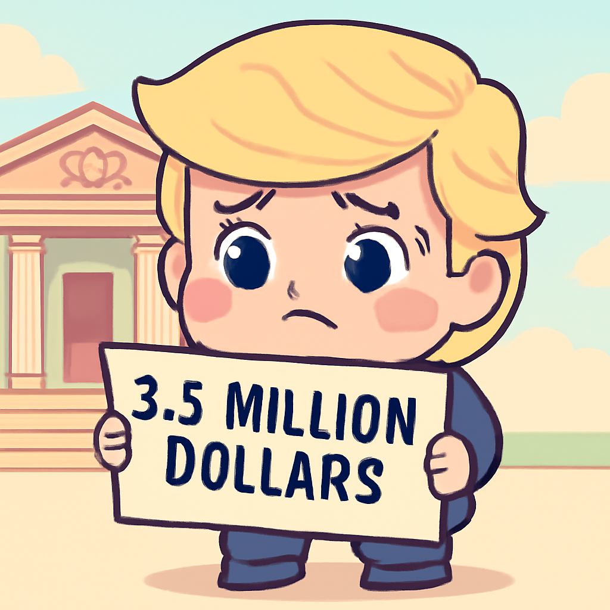

其一 · 委內瑞拉 · 震後救援陷入絕望
委內瑞拉震災死亡人數已超過1700人
在委內瑞拉，最近的雙重地震造成超過1700人死亡，隨著救援工作進入絕望階段，許多家庭仍在尋找失蹤的親人。這場災難不僅影響了生存者的生活，還讓整個國家的重建工作面臨挑戰，看來未來的日子會很艱難。希望他們能早日重建家園。
🔗 原始新聞 ↗
2026-06-30 · 以古觀今，以笑抗愁
委內瑞拉震災死亡人數已超過1700人
在委內瑞拉，最近的雙重地震造成超過1700人死亡，隨著救援工作進入絕望階段，許多家庭仍在尋找失蹤的親人。這場災難不僅影響了生存者的生活，還讓整個國家的重建工作面臨挑戰，看來未來的日子會很艱難。希望他們能早日重建家園。
🔗 原始新聞 ↗
德國發生罕見槍擊事件，六人喪命
在德國，一名45歲男子因為與前妻的監護權爭執，對一個母嬰中心開槍，造成六名工作人員喪生。這起事件引發了對家庭暴力和槍支管制的熱烈討論，讓人不禁想：在追求親情之前，是否應該先追求和平？
🔗 原始新聞 ↗
特朗普需支付350萬美元賠償金

美國最高法院拒絕了特朗普針對E. Jean Carroll性侵案的最後上訴，這意味著他將得支付350萬美元的賠償金。這個案件不僅是特朗普的法律麻煩，也可能影響他未來的政治生涯，看來這位前總統的麻煩還不止於此。
🔗 原始新聞 ↗
美國與伊朗之間的衝突再度加劇
美國與伊朗之間的緊張局勢持續升溫，雙方在最近的交火中互相指責違反停火協議。各方擔心這可能導致更大規模的衝突，影響整個中東地區的穩定。真希望他們能坐下來好好聊聊，或許能找到和平的路。
🔗 原始新聞 ↗
安迪·伯納姆或成為英國新首相
英國的安迪·伯納姆看起來將成為下任首相，他提到希望將權力從倫敦轉移至其他地區，成立名為 "北方10號" 的新機構，讓地方領導人獲得更多資源和控制權。這讓人期待，或許未來的英國會更公平一點？
🔗 原始新聞 ↗